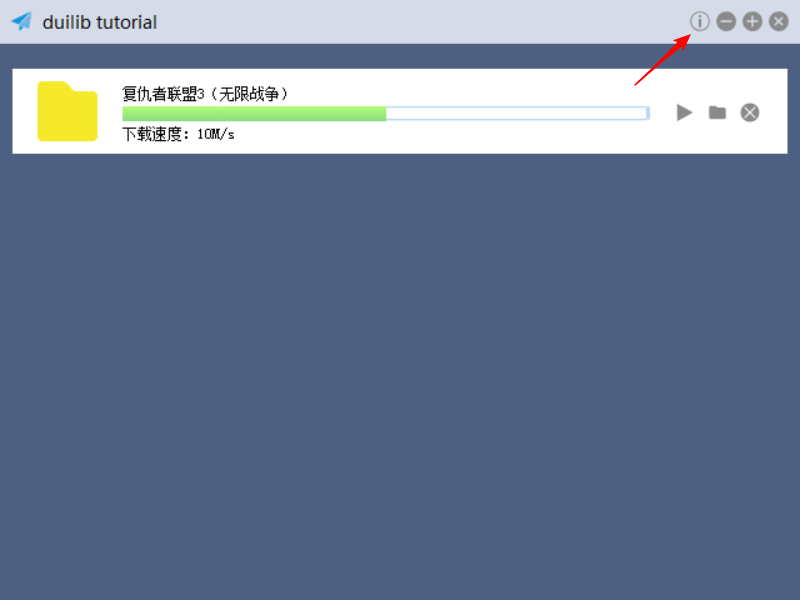
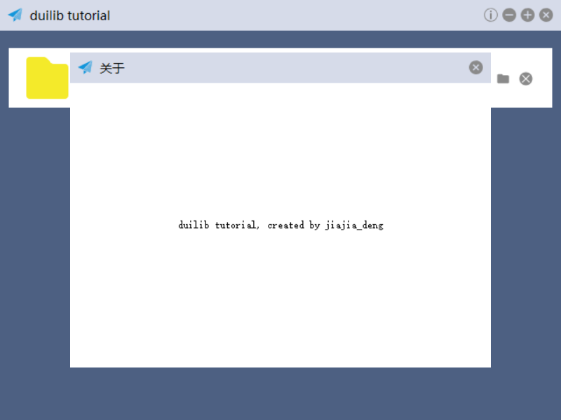

一个大规模的应用不可能只有一个窗口，之前我们的案例都是在一个窗口实现的，接下来我们实现一个关于窗口，来介绍如何通过 DuiLib 实现子窗口管理。
创建子窗口 XML 配置文件
前面我们已经做了很多 XML 的案例了，所以这里就不多说了，直接将写好的 XML 贴上来给大家做一下简单分析，然后直接使用。
<?xml version="1.0" encoding="UTF-8"?>
<Window size="480,360" caption="0,0,0,35">
<Font shared="true" id="1" name="微软雅黑" size="14" />
<VerticalLayout>
<!-- 标题栏 -->
<HorizontalLayout height="35" bkcolor="#FFD6DBE9" inset="8,8,8,0">
<HorizontalLayout width="185">
<Control bkimage="logo.png" height="18" width="18" />
<Label text="关于" height="18" padding="8" font="1"/>
</HorizontalLayout>
<Control />
<HorizontalLayout width="18">
<Button name="btn_close" height="18" width="18" normalimage="btn_close_normal.png" hotimage="btn_close_hovered.png" pushedimage="btn_close_pushed.png" />
</HorizontalLayout>
</HorizontalLayout>
<HorizontalLayout bkcolor="#FFFFFFFF">
<Label align="center" text="duilib tutorial, created by jiajia_deng" />
</HorizontalLayout>
</VerticalLayout>
</Window>
窗口还是保留标题栏，但只有一个关闭按钮了，并且关闭按钮的名字我修改成了 btn_close，目的就是不想让窗口走默认的关闭流程。窗口中只有一个 Label 显示了一串文字（毕竟这不是重点）。然后我们需要新建一个类，与 MainWndFrame 窗口一样，继承 WindowImplBase 实现各个虚函数。如下所示：
#pragma once
class AboutWndFrame : public WindowImplBase
{
protected:
virtual CDuiString GetSkinFolder() override; // 获取皮肤文件的目录，如果有多层目录这里可以设置
virtual CDuiString GetSkinFile() override; // 设置皮肤文件名字
virtual LPCTSTR GetWindowClassName(void) const override; // 设置当前窗口的 class name
virtual UILIB_RESOURCETYPE GetResourceType() const override;// 返回资源类型
virtual LPCTSTR GetResourceID() const override; // 如果是ZIP资源，返回资源ID
virtual void InitWindow() override; // 窗口初始化函数
virtual void Notify(TNotifyUI& msg) override; // 通知事件处理函数
public:
static const LPCTSTR kClassName;
static const LPCTSTR kAboutWndFrame;
private:
CButtonUI* m_pCloseBtn = nullptr;
};
各个接口的实现我就不在这里贴代码了，大家可以看提交的 Demo 代码。随后在 main_wnd_frame.xml 中，增加一个关于按钮到最小化按钮左边。
<HorizontalLayout childpadding="3" width="81">
<Button name="aboutbtn" height="18" width="18" normalimage="btn_about_normal.png" hotimage="btn_about_hovered.png" pushedimage="btn_about_pushed.png" />
<Button name="minbtn" height="18" width="18" normalimage="btn_min_normal.png" hotimage="btn_min_hovered.png" pushedimage="btn_min_pushed.png" />
....
</HorizontalLayout>
此时主窗口就会显示一个关于按钮了，注意我们也修改了父容器的宽度，因为比之前多了一个按钮，我们要算上按钮宽度和间距增大父容器的宽度。

接下来做关于按钮的响应，首先添加一个按钮的成员变量来接收关于按钮，然后再 inlucde 关于窗口的头文件 AboutWndFrame.h，并添加一个窗口的成员变量 m_pAboutWndFrame。重载 OnClick 方法判断当前点击的是否是关于按钮，如果是那么就显示关于窗口。代码如下：
void MainWndFrame::OnClick(TNotifyUI& msg)
{
CDuiString strName = msg.pSender->GetName();
if (strName == _T("aboutbtn"))
{
if (m_pAboutWndFrame == nullptr)
{
m_pAboutWndFrame = new AboutWndFrame();
m_pAboutWndFrame->Create(this->GetHWND(), AboutWndFrame::kClassName, UI_WNDSTYLE_DIALOG, 0);
}
m_pAboutWndFrame->CenterWindow();
m_pAboutWndFrame->ShowWindow();
}
__super::OnClick(msg);
}
这里有个小技巧就是判断窗口是不是 nullptr，如果是 nullptr 就全新 new 一个 AboutWndFrame，如果是有效的指针则直接显示窗口。在 AboutWndFrame 中在关闭窗口时，只需要激活父窗口然后把自己隐藏掉就可以了。如下所示：
void AboutWndFrame::Notify(TNotifyUI& msg)
{
if (msg.sType == DUI_MSGTYPE_CLICK)
{
CDuiString strName = msg.pSender->GetName();
if (strName == _T("btn_close"))
{
HWND hWndParent = GetWindowOwner(m_hWnd);
if (hWndParent)
{
::EnableWindow(hWndParent, TRUE);
::SetFocus(hWndParent);
}
ShowWindow(false);
}
}
}
